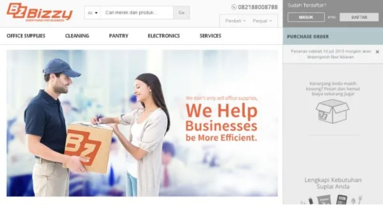
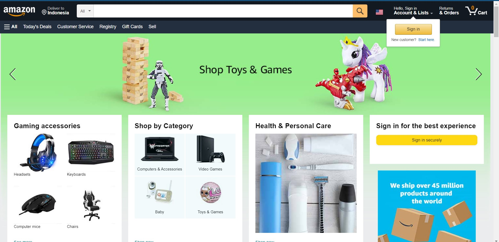

Bizzy.co.id adalah sebuah bisnis e-commerce berkonsep marketplace yang akan membantu perusahaan dari berbagai tingkatan (kecil, menengah dan besar) untuk memperoleh suplai produk maupun jasa secara mudah.
Di bawah naungan Bizzy Group, perusahaan berambisi menjadi yang terdepan dalam melayani konsumen B2B, terutama di kancah UKM. CEO Bizzy Andrew Mawikere akan memimpin holding tersebut. Rencananya pada akhir tahun ini akan merilis situs baru dengan domain Bizzy.co.id, berisi seluruh layanan Bizzy yang sudah terintegrasi secara menyeluruh.
Amazon.com adalah toko online terbesar di dunia yang menyediakan berbagai jenis produk, mulai dari buku, barang elektronik, kebutuhan rumah tangga, games, gadget, dan lain-lain. Toko online ini didirikan oleh Jeff Bezos pada tahun 1994 dan berpusat di Seattle, Washington, Amerika serikat.
Amazon.com memiliki sejumlah produk dan layanan yang tersedia, termasuk: Domain amazon.com mendapat setidaknya 615 juta pengunjung setiap tahun pada 2008. Amazon mendapat lebih dari 130 juta pelanggan ke situs web AS-nya per bulan pada awal 2016.
Business to Business atau B2B adalah transaksi yang terjadi antara satu bisnis dan bisnis lainnya. Sebaliknya Business to Customer atau B2C adalah transaksi antara bisnis dan pelanggan langsung.
B2B atau Business to Business merupakan penjualan produk atau jasa yang diberikan oleh satu bisnis dan diperuntukan untuk bisnis lainnya, bukan kepada konsumen. Sebagai contoh, jika Anda menjalankan bisnis yang menjual bahan pakaian dan Anda melakukan penjualan ke store-store atau bisnis fashion yang ada. Inilah yang disebut dengan B2B karena bisnis atau jasa Anda diperuntukkan untuk perusahaan lain, bukan langsung kepada perorangan atau grup.
B2C atau Business to Customer merupakan bisnis yang melakukan pelayanan atau penjualan barang atau jasa kepada konsumen perorangan atau grup secara langsung.
Dengan kata lain, bisnis jenis ini berhubungan langsung dengan konsumen bukan perusahaan atau bisnis lainnya. Sebagai contohnya, Anda memiliki bisnis makanan. Lalu ketika Anda menjual makanan kepada konsumen perorangan, berarti bisnis Anda B2C. Tetapi jika Anda menjual makanan dalam jumlah besar kepada bisnis lainnya, berarti bisnis Anda adalah B2B.
Biasanya perusahaan B2B lebih dekat pada sektor industri , sedangkan B2C lebih berfokus pada pengguna atau pelanggan. Pendekatan pemasaran digital pada kedua jenis perusahaan tersebut akan berbeda, yang terkait dengan karakter saluran pemasaran digital.
Dari hasil hal tersebut, maka dapat dipahami perbedaan pada keduanya:
1. B2C lebih Customer Centric, sedangkan Business to Business lebih berfokus kepada industri.
2. Pendekatan media sosial berbeda diantara kedua jenis usaha tersebut, sehingga harus disesuaikan pada masing-masing karakteristik sosial media.
3. Solusi dan referensi pengalaman lebih penting pada B2B dibanding pada B2C.
4. Social Public Relation tidak terlalu diperlukan pada jenis B2B. Akan Tetapi pada B2C Social Public Relation merupakan bagian yang tidak dapat dipisahkan dari program marketing secara keseluruhan.
Landing Page Bizzy
Landing Page Amazon
Bizzy
Amazon
Bizzy
Amazon
Bizzy
Penjual akan mengirimkan barang yang dibeli sesuai dengan inputan alamat atau lokasi yang diinginkan pembeli, lalu saat pembeli telah menerima abrang dapat melakukan konfirmasi penerimaan barang melalui bizzy.co.id.
Amazon
Distribusi barang dari Penjual ke Market lalu ke Pembeli, setlah produk siap dikirim maka barang akan dikirimkan melalui perantara kurir dengan bertahap. Jenis barang yang dikiirmkan dan lokasi pengirimian barang berdasarkan data yang diinput pada market. Barang akan sampai ke tangan Pembeli.
Bizzy
Kamu bisa meminta kepada Bizzy untuk membuatkan sebuah platform Bizzy Select yang bisa dipersonalisasi sesuai dengan kebutuhan perusahaan kamu. Kamu pun bisa menentukan berbagai jenis barang dan jasa yang sering kamu butuhkan, agar bisa dimasukkan ke dalam platform tersebut. Berbagai barang tersebut kemudian bisa kamu beli dengan harga grosir yang lebih murah, serta jangka waktu pembayaran yang bisa disepakati dengan Bizzy. Uniknya, seluruh layanan ini dihadirkan Bizzy tanpa mengenakan biaya sepeser pun, alias gratis.
Barang bisa kamu beli dengan harga grosir yang biasanya hanya dinikmati oleh perusahaan besar, meski kamu hanya membeli satu atau dua barang. Selain itu, Bizzy pun menghadirkan layanan gratis ongkos kirim untuk setiap pembelian lewat Bizzy Benefits. Alamat kantor kamu akan langsung terdaftar secara otomatis menjadi tujuan pengiriman barang.
Dalam layanan Bizzy Travel, Bizzy menghadirkan beberapa fitur seperti penentuan anggaran dan kelas kamar untuk masing-masing karyawan, fitur alur persetujuan (approval flow), hingga fitur pembuatan laporan yang bisa dilakukan secara real time. Fitur-fitur tersebut diyakini bisa menjadi nilai tambah dari Bizzy Travel bila dibandingkan dengan layanan pemesanan kamar hotel lain seperti Traveloka dan Tiket. Bizzy Travel ini pun dilengkapi dengan harga perusahaan (corporate rate) yang lebih murah, dan jangka waktu pembayaran yang lebih fleksibel.
Amazon
API Destination : fitur baru untuk EventBridge yang memungkinkan pengembang untuk mengirimkan kejadian kembali ke berbagai aplikasi on-premise atau perangkat lunak sebagai layanan (SaaS) dengan kemampuan untuk mengendalikan keluaran dan autentikasi. Pelanggan bisa mengirimkan kejadian ke aplikasi berbasis web apa pun dengan alamat web tanpa perlu khawatir harus menuliskan kode khusus, atau menggunakan infrastruktur tambahan. Pelanggan bisa mengonfigurasi aturan dengan transformasi masukan yang akan memetakan format kejadian ke format layanan penerima, dan Anda bisa menggunakan EventBridge untuk menjaga keamanan dan pengiriman.